<meta charset="utf-8">
<meta name="viewport" content="width=device-width, initial-scale=1, viewport-fit=cover">
<title>Berke Erdem Simulation</title>
<meta name="claude:viewport-fit-sides" content="cover">
<link rel="preconnect" href="https://fonts.googleapis.com">
<link rel="preconnect" href="https://fonts.gstatic.com" crossorigin>
<link rel="stylesheet" href="https://fonts.googleapis.com/css2?family=Chakra+Petch:wght@500;600;700&family=IBM+Plex+Mono:wght@400;500&family=Inter:wght@400;500;600&display=swap">

<style>
:root{
  --bg:#0b0c0e; --bg-2:#121418; --bg-3:#191c21; --line:#262a31; --line-2:#333841;
  --fg:#e9ecf1; --fg-2:#a6adba; --fg-3:#6f7786;
  --accent:#ff7a2f; --accent-2:#ffb066; --accent-ink:#1a0c02;
  --cool:#5aa7ff;
  --radius:14px;
  --maxw:1180px;
  --heroveil1:rgba(11,12,14,.45); --heroveil2:rgba(11,12,14,.72);
  --heroop:.5;
  color-scheme:dark;
}
@media (prefers-color-scheme:light){
  :root:not([data-theme="dark"]){
    --bg:#f6f5f3; --bg-2:#ffffff; --bg-3:#efedea; --line:#e2dfda; --line-2:#cbc7c0;
    --fg:#14161a; --fg-2:#4f5663; --fg-3:#7b8290;
    --accent:#c8501a; --accent-2:#a2400f; --accent-ink:#fff6ef;
    --cool:#2a6ec4;
    --heroveil1:rgba(246,245,243,.55); --heroveil2:rgba(246,245,243,.80);
    --heroop:.62;
    color-scheme:light;
  }
}
:root[data-theme="light"]{
  --bg:#f6f5f3; --bg-2:#ffffff; --bg-3:#efedea; --line:#e2dfda; --line-2:#cbc7c0;
  --fg:#14161a; --fg-2:#4f5663; --fg-3:#7b8290;
  --accent:#c8501a; --accent-2:#a2400f; --accent-ink:#fff6ef;
  --cool:#2a6ec4;
  --heroveil1:rgba(246,245,243,.55); --heroveil2:rgba(246,245,243,.80);
  --heroop:.62;
  color-scheme:light;
}

*{box-sizing:border-box}
[hidden]{display:none!important}
body{
  background:var(--bg); color:var(--fg);
  font-family:Inter,-apple-system,BlinkMacSystemFont,"Segoe UI",Roboto,sans-serif;
  font-size:16px; line-height:1.65; margin:0;
  -webkit-font-smoothing:antialiased;
}
body::before{content:"";position:fixed;inset:0 0 auto;height:env(safe-area-inset-top,0px);background:var(--bg);z-index:60}

h1,h2,h3{font-family:"Chakra Petch",Inter,sans-serif;font-weight:700;line-height:1.12;text-wrap:balance;margin:0}
p{margin:0}
img{display:block;max-width:100%}
button,input,select,textarea{font:inherit;color:inherit}

.wrap{width:100%;max-width:var(--maxw);margin-inline:auto;
  padding-left:max(16px,env(safe-area-inset-left,0px));
  padding-right:max(16px,env(safe-area-inset-right,0px));}

.mono{font-family:"IBM Plex Mono",ui-monospace,monospace}
.eyebrow{font-family:"IBM Plex Mono",ui-monospace,monospace;font-size:.72rem;letter-spacing:.18em;
  text-transform:uppercase;color:var(--accent);display:flex;align-items:center;gap:10px}
.eyebrow::before{content:"";width:22px;height:1px;background:var(--accent);flex:none}

header.nav{position:sticky;top:env(safe-area-inset-top,0px);z-index:50;
  background:var(--bg);border-bottom:1px solid var(--line)}
.nav-in{display:flex;align-items:center;gap:18px;padding-block:12px}
.brand{font-family:"Chakra Petch",sans-serif;font-weight:700;font-size:1.02rem;color:var(--fg);
  display:flex;align-items:center;gap:9px;text-decoration:none;white-space:nowrap}
.brand .dot{width:9px;height:9px;border-radius:2px;background:var(--accent);flex:none}
.nav-links{display:flex;gap:2px;margin-left:auto;flex-wrap:wrap}
.nav-links a{font-size:.85rem;color:var(--fg-2);text-decoration:none;padding:7px 10px;border-radius:8px}
.nav-links a:hover{color:var(--fg);background:var(--bg-3)}
.nav-tools{display:flex;gap:6px;flex:none;margin-left:auto}
.nav-links+.nav-tools{margin-left:0}
.chip{background:var(--bg-3);border:1px solid var(--line);color:var(--fg-2);
  border-radius:8px;padding:6px 10px;font-size:.76rem;cursor:pointer;letter-spacing:.04em;
  font-family:"IBM Plex Mono",monospace}
.chip:hover{color:var(--fg);border-color:var(--line-2)}
@media(max-width:860px){.nav-links{display:none}}

.hero{position:relative;overflow:hidden;border-bottom:1px solid var(--line)}
.hero-img{position:absolute;inset:0;width:100%;height:100%;object-fit:cover;opacity:var(--heroop)}
.hero-veil{position:absolute;inset:0;
  background:linear-gradient(180deg,var(--heroveil1) 0%,var(--heroveil2) 45%,var(--bg) 100%)}
.hero-in{position:relative;padding-block:clamp(70px,14vw,136px) clamp(54px,10vw,104px);
  display:grid;gap:24px;max-width:820px}
.hero h1{font-size:clamp(2.2rem,6.2vw,4rem);letter-spacing:-.015em}
.hero h1 em{font-style:normal;color:var(--accent)}
.hero .lead{font-size:clamp(1rem,2.2vw,1.18rem);color:var(--fg-2);max-width:62ch}
.cta-row{display:flex;gap:12px;flex-wrap:wrap;margin-top:4px}
.btn{display:inline-flex;align-items:center;gap:9px;text-decoration:none;cursor:pointer;
  padding:12px 20px;border-radius:10px;font-weight:600;font-size:.93rem;border:1px solid transparent}
.btn-p{background:var(--accent);color:var(--accent-ink);border-color:var(--accent)}
.btn-p:hover{background:var(--accent-2);border-color:var(--accent-2)}
.btn-s{background:transparent;border-color:var(--line-2);color:var(--fg)}
.btn-s:hover{background:var(--bg-3)}
.stat-strip{display:grid;grid-template-columns:repeat(auto-fit,minmax(160px,1fr));
  border-top:1px solid var(--line);position:relative;background:var(--bg-2)}
.stat{padding:17px max(16px,env(safe-area-inset-left,0px));border-right:1px solid var(--line)}
.stat:last-child{border-right:0}
.stat b{display:block;font-family:"Chakra Petch",sans-serif;font-size:1.45rem;color:var(--fg)}
.stat span{font-size:.72rem;letter-spacing:.1em;text-transform:uppercase;color:var(--fg-3);
  font-family:"IBM Plex Mono",monospace}

section{padding-block:clamp(54px,9vw,94px);border-bottom:1px solid var(--line);scroll-margin-top:68px}
#report{scroll-margin-top:92px}
section.alt{background:var(--bg-2)}
.sec-head{display:grid;gap:14px;max-width:72ch;margin-bottom:36px}
.sec-head h2{font-size:clamp(1.7rem,4.2vw,2.5rem);letter-spacing:-.01em}
.sec-head p{color:var(--fg-2)}

.grid{display:grid;gap:14px;grid-template-columns:repeat(auto-fit,minmax(270px,1fr))}
.card{background:var(--bg-3);border:1px solid var(--line);border-radius:var(--radius);
  padding:20px;min-width:0;display:grid;gap:9px;align-content:start}
section.alt .card{background:var(--bg)}
.card h3{font-size:1.03rem;display:flex;align-items:center;gap:9px}
.card p{font-size:.895rem;color:var(--fg-2)}
.card .num{font-family:"IBM Plex Mono",monospace;font-size:.69rem;color:var(--accent);
  border:1px solid var(--line-2);border-radius:5px;padding:1px 6px;flex:none}

.gal{display:grid;gap:12px;grid-template-columns:repeat(auto-fit,minmax(290px,1fr));margin-top:18px}
.shot{position:relative;border-radius:var(--radius);overflow:hidden;border:1px solid var(--line);
  background:var(--bg-3);cursor:zoom-in;min-width:0;margin:0}
.shot img{width:100%;aspect-ratio:16/9;object-fit:cover;transition:transform .5s ease}
.shot:hover img{transform:scale(1.04)}
.shot figcaption{position:absolute;left:0;right:0;bottom:0;padding:30px 14px 11px;
  font-size:.8rem;line-height:1.45;color:#f2f4f7;
  background:linear-gradient(180deg,transparent,rgba(0,0,0,.85))}
.shot.wide{grid-column:span 2}
@media(max-width:700px){.shot.wide{grid-column:span 1}}

dialog.light{border:0;padding:0;background:transparent;max-width:min(96vw,1500px);width:100%}
dialog.light::backdrop{background:rgba(0,0,0,.9)}
dialog.light img{width:100%;border-radius:10px}
dialog.light .cap{color:#cfd4dc;font-size:.85rem;padding:10px 4px;display:flex;
  justify-content:space-between;gap:14px;align-items:flex-start}
dialog.light button{background:none;border:0;color:#cfd4dc;cursor:pointer;font-size:.85rem;flex:none}

.road{display:grid;gap:12px}
.road-item{display:grid;grid-template-columns:auto 1fr;gap:16px;align-items:start;
  background:var(--bg-3);border:1px solid var(--line);border-radius:var(--radius);padding:20px}
section.alt .road-item{background:var(--bg)}
.badge{font-family:"IBM Plex Mono",monospace;font-size:.67rem;letter-spacing:.09em;
  text-transform:uppercase;padding:4px 9px;border-radius:999px;white-space:nowrap;
  border:1px solid var(--line-2);color:var(--fg-3);justify-self:start}
.badge.now{color:var(--accent);border-color:var(--accent)}
.badge.soon{color:var(--cool);border-color:var(--cool)}
.road-item h3{font-size:1.1rem;margin-bottom:6px}
.road-item p{font-size:.92rem;color:var(--fg-2);max-width:78ch}
@media(max-width:560px){.road-item{grid-template-columns:1fr}}

.about{display:grid;gap:30px;grid-template-columns:1.3fr .7fr}
@media(max-width:820px){.about{grid-template-columns:1fr}}
.about p{color:var(--fg-2);margin-bottom:14px;max-width:66ch}
.about p.first{color:var(--fg);font-size:1.12rem}
.skills{display:flex;flex-wrap:wrap;gap:7px;align-content:start}
.skill{font-family:"IBM Plex Mono",monospace;font-size:.75rem;padding:6px 11px;border-radius:7px;
  background:var(--bg-3);border:1px solid var(--line);color:var(--fg-2)}
section.alt .skill{background:var(--bg)}

.contact-grid{display:grid;gap:14px;grid-template-columns:1fr 1.4fr}
@media(max-width:860px){.contact-grid{grid-template-columns:1fr}}
.panel{background:var(--bg-3);border:1px solid var(--line);border-radius:var(--radius);padding:22px;min-width:0}
section.alt .panel{background:var(--bg)}
.panel h3{font-size:1.14rem;margin-bottom:10px}
.panel>p{font-size:.9rem;color:var(--fg-2)}
.mailbox{display:flex;align-items:center;gap:10px;flex-wrap:wrap;margin-top:16px;
  background:var(--bg-2);border:1px solid var(--line-2);border-radius:10px;padding:12px 14px}
section.alt .mailbox{background:var(--bg-3)}
.mailbox code{font-family:"IBM Plex Mono",monospace;font-size:.9rem;user-select:all;
  word-break:break-all;color:var(--fg)}
.mini{font-size:.78rem;color:var(--fg-3);margin-top:10px}

.field{display:grid;gap:6px;margin-bottom:12px;min-width:0}
.field label{font-family:"IBM Plex Mono",monospace;font-size:.7rem;letter-spacing:.09em;
  text-transform:uppercase;color:var(--fg-3)}
.field input,.field select,.field textarea{
  background:var(--bg-2);border:1px solid var(--line-2);border-radius:9px;padding:10px 12px;
  width:100%;font-size:.92rem}
section.alt .field input,section.alt .field select,section.alt .field textarea{background:var(--bg-3)}
.field textarea{resize:vertical;min-height:84px}
.field input:focus,.field select:focus,.field textarea:focus{outline:2px solid var(--accent);outline-offset:1px}
.two{display:grid;grid-template-columns:1fr 1fr;gap:12px}
@media(max-width:520px){.two{grid-template-columns:1fr}}
.out{margin-top:14px}
.out pre{background:var(--bg-2);border:1px solid var(--line-2);border-radius:10px;padding:14px;
  font-family:"IBM Plex Mono",monospace;font-size:.79rem;white-space:pre-wrap;word-break:break-word;
  max-height:320px;overflow:auto;margin:0}
section.alt .out pre{background:var(--bg-3)}

footer{padding-block:32px;color:var(--fg-3);font-size:.84rem;
  display:flex;justify-content:space-between;gap:14px;flex-wrap:wrap}
.note{font-size:.8rem;color:var(--fg-3);margin-top:18px;max-width:72ch}
</style>

<header class="nav">
  <div class="wrap nav-in">
    <a class="brand" href="#top"><span class="dot"></span>HORIZON &amp; BEYOND SOFTWARE</a>
    <nav class="nav-links">
      <a href="#work" data-i18n="nav.work">What I'm building</a>
      <a href="#gallery" data-i18n="nav.gallery">Gallery</a>
      <a href="#next" data-i18n="nav.next">What's next</a>
      <a href="#about" data-i18n="nav.about">About</a>
      <a href="#contact" data-i18n="nav.contact">Contact</a>
      <a href="#report" data-i18n="nav.report">Report a bug</a>
    </nav>
    <div class="nav-tools">
      <button class="chip" id="lang" type="button">TR</button>
      <button class="chip" id="theme" type="button" aria-label="Theme">&#9680;</button>
    </div>
  </div>
</header>

<main id="top">

<div class="hero">
  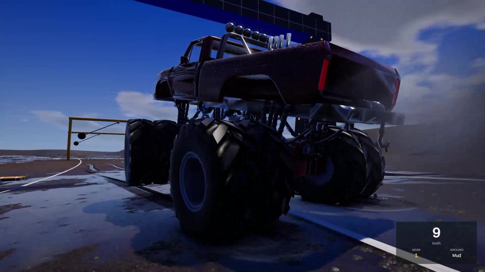
  <div class="hero-veil"></div>
  <div class="wrap hero-in">
    <div class="eyebrow"><span data-i18n="hero.eyebrow">Unity &middot; Simulation assets</span></div>
    <h1><span data-i18n="hero.h1a">Simulation systems,</span> <em data-i18n="hero.h1b">built to be driven.</em></h1>
    <p class="lead" data-i18n="hero.lead">I'm a computer engineer who has spent years on games and simulation. I build modular Unity simulation packages that work the moment you drop them in and stay open to extend &mdash; and games whose main job is to entertain people, me first.</p>
    <div class="cta-row">
      <a class="btn btn-p" href="#work" data-i18n="hero.cta1">See what I'm building</a>
      <a class="btn btn-s" href="#contact" data-i18n="hero.cta2">Get in touch</a>
    </div>
  </div>
  <div class="stat-strip">
    <div class="stat"><b>20+</b><span data-i18n="stat.s1">runtime systems</span></div>
    <div class="stat"><b>7</b><span data-i18n="stat.s2">vehicle archetypes</span></div>
    <div class="stat"><b>152</b><span data-i18n="stat.s3">validation tests</span></div>
    <div class="stat"><b>2022.3 &rarr; 6</b><span data-i18n="stat.s4">Unity LTS verified</span></div>
  </div>
</div>

<section id="work">
  <div class="wrap">
    <div class="sec-head">
      <div class="eyebrow"><span data-i18n="work.eyebrow">Currently building</span></div>
      <h2 data-i18n="work.h2">Car Physics &mdash; a vehicle simulation, not a wrapper</h2>
      <p data-i18n="work.p">A ground-up vehicle simulation package for Unity URP. The contact model, the suspension solver and the drivetrain are written from scratch rather than layered over WheelCollider, and everything around them &mdash; deformation, mechanical damage, synthesised audio, ground interaction, lighting, input &mdash; is built so you can take one piece or all of it.</p>
    </div>
    <div class="grid">
      <div class="card"><h3><span class="num">01</span><span data-i18n="f1.t">Tyre contact</span></h3><p data-i18n="f1.b">A sphere-ring ground query per wheel instead of a single ray, so a tyre reads the shape of what it stands on &mdash; kerbs, ruts, rocks, the lip of a wheel arch.</p></div>
      <div class="card"><h3><span class="num">02</span><span data-i18n="f2.t">Suspension</span></h3><p data-i18n="f2.b">A coil-over solver with an optional hydraulic ram in series. That is what lets the lowrider hop and stand on three wheels for real, instead of playing an animation.</p></div>
      <div class="card"><h3><span class="num">03</span><span data-i18n="f3.t">Drivetrain</span></h3><p data-i18n="f3.b">Manual or automatic gearbox, clutch, turbo with a wastegate, and exhaust flames driven by the actual spool state rather than a timer.</p></div>
      <div class="card"><h3><span class="num">04</span><span data-i18n="f4.t">Body deformation</span></h3><p data-i18n="f4.b">Burst-compiled mesh deformation with read/write meshes, a paint atlas, detachable parts and separate glass. Panels dent, parts come off, and the debris keeps colliding.</p></div>
      <div class="card"><h3><span class="num">05</span><span data-i18n="f5.t">Mechanical damage</span></h3><p data-i18n="f5.b">A crash produces faults, not just dents: per-zone write-off, tyre flats and blowouts, radiator and engine failures, and a control lock once the car is finished.</p></div>
      <div class="card"><h3><span class="num">06</span><span data-i18n="f6.t">Synthesised audio</span></h3><p data-i18n="f6.b">Engine, turbo, tyres and impacts are synthesised at runtime rather than sampled. Per-surface tyre loops and fault sounds that track the damage state &mdash; and no sample pack to ship.</p></div>
      <div class="card"><h3><span class="num">07</span><span data-i18n="f7.t">Ground systems</span></h3><p data-i18n="f7.b">Terrain surfaces with their own grip and sound, a voxel mud volume that cakes the body directionally, and a wet-ground depth field where puddles sit on the mesh and aquaplaning reads the real depth.</p></div>
      <div class="card"><h3><span class="num">08</span><span data-i18n="f8.t">Water</span></h3><p data-i18n="f8.b">A river simulation with calibrated discharge and two baked states &mdash; normal flow and flood &mdash; plus screen-space reflections, ripples, and wet paint that dries off.</p></div>
      <div class="card"><h3><span class="num">09</span><span data-i18n="f9.t">Lighting</span></h3><p data-i18n="f9.b">A day/night cycle driving sky, sun and ambient, with headlights, beams and brake lights that answer to it.</p></div>
      <div class="card"><h3><span class="num">10</span><span data-i18n="f10.t">Input</span></h3><p data-i18n="f10.b">Keyboard, gamepad, and real wheel support: pedal sets, H-pattern shifters, handbrake levers, soft lock and per-axis calibration &mdash; layered, so unplugging the wheel falls straight back to the pad.</p></div>
      <div class="card"><h3><span class="num">11</span><span data-i18n="f11.t">Modular rig</span></h3><p data-i18n="f11.b">Prefabs carry only the core. At runtime the vehicle rig builds the other twenty-odd systems from a shared profile, so you keep the parts you need and drop the rest.</p></div>
      <div class="card"><h3><span class="num">12</span><span data-i18n="f12.t">Editor tooling</span></h3><p data-i18n="f12.b">Tracks, levels and lighting are generated from editor tools, with a render optimiser, a 152-test validation suite and a cinematic recorder harness for trailers.</p></div>
    </div>
  </div>
</section>

<section id="gallery" class="alt">
  <div class="wrap">
    <div class="sec-head">
      <div class="eyebrow"><span data-i18n="gal.eyebrow">In motion</span></div>
      <h2 data-i18n="gal.h2">Frames from the running simulation</h2>
      <p data-i18n="gal.p">All captured in play mode, nothing composited. Click any frame to open it.</p>
    </div>
    <div class="gal" id="gal">
      <figure class="shot wide" data-src="img/mt-water.jpg">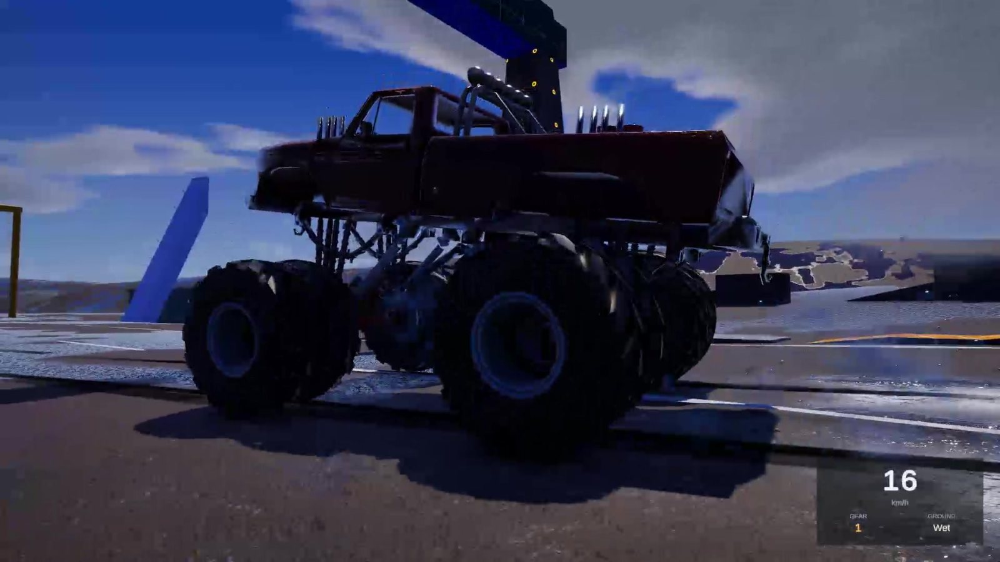<figcaption data-i18n="g1">Monster truck crossing standing water &mdash; solid-axle articulation and per-wheel contact</figcaption></figure>
      <figure class="shot" data-src="img/wheel-close.jpg">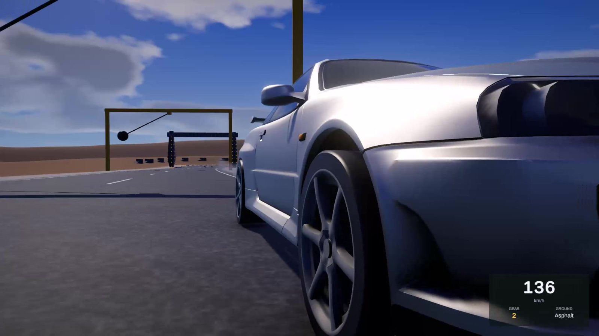<figcaption data-i18n="g2">Steering geometry and suspension travel under load</figcaption></figure>
      <figure class="shot" data-src="img/lowrider.jpg">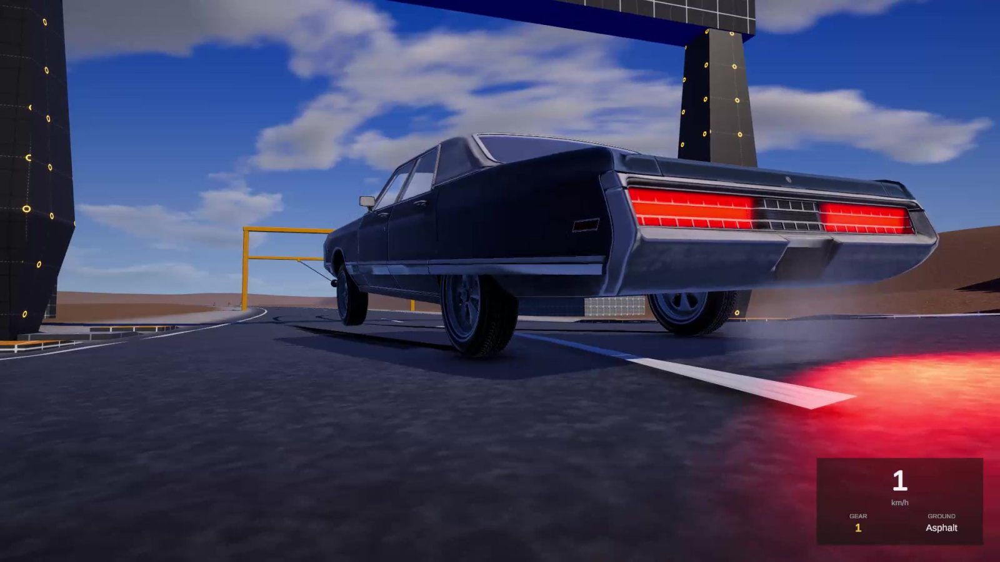<figcaption data-i18n="g3">Hydraulics: a ram in series with the coil, holding the car on three wheels</figcaption></figure>
      <figure class="shot" data-src="img/night-flame.jpg">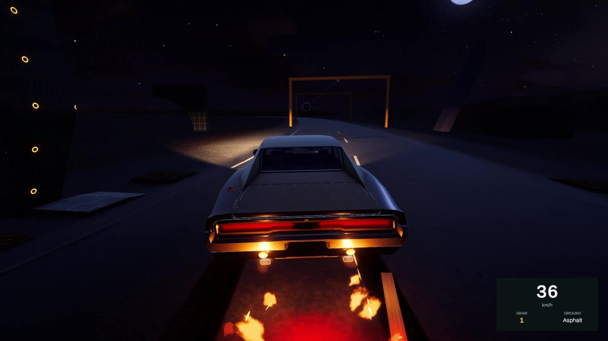<figcaption data-i18n="g4">Exhaust flames driven by the turbo's spool state, under the day/night cycle</figcaption></figure>
      <figure class="shot wide" data-src="img/spin-dust.jpg">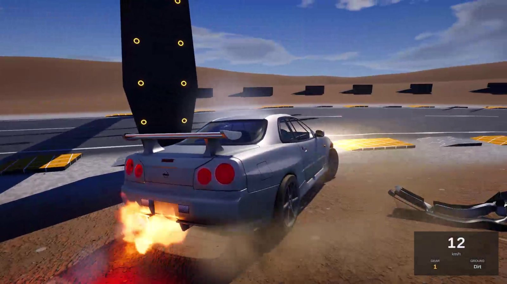<figcaption data-i18n="g5">Losing the rear on a dusty surface &mdash; grip, dust and flames are all surface-driven</figcaption></figure>
      <figure class="shot" data-src="img/muscle-side.jpg">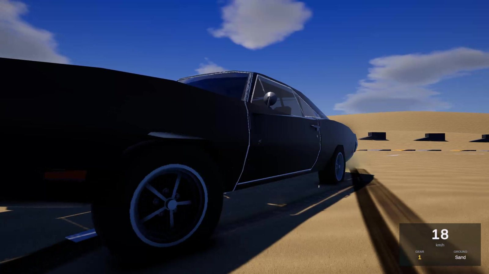<figcaption data-i18n="g6">Weight transfer on turn-in, low chase camera</figcaption></figure>
      <figure class="shot" data-src="img/headlights.jpg">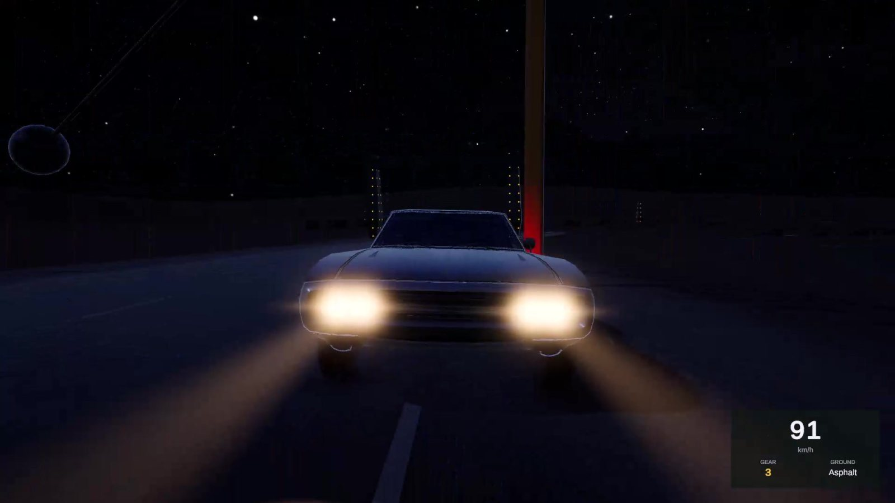<figcaption data-i18n="g7">Headlights and beams at night</figcaption></figure>
      <figure class="shot" data-src="img/water.jpg">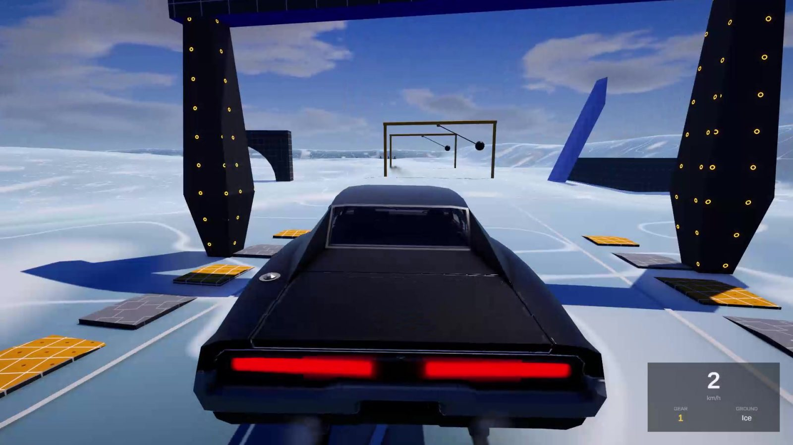<figcaption data-i18n="g8">Flooded ground: wet paint, ripples and reflections</figcaption></figure>
      <figure class="shot" data-src="img/deform.jpg">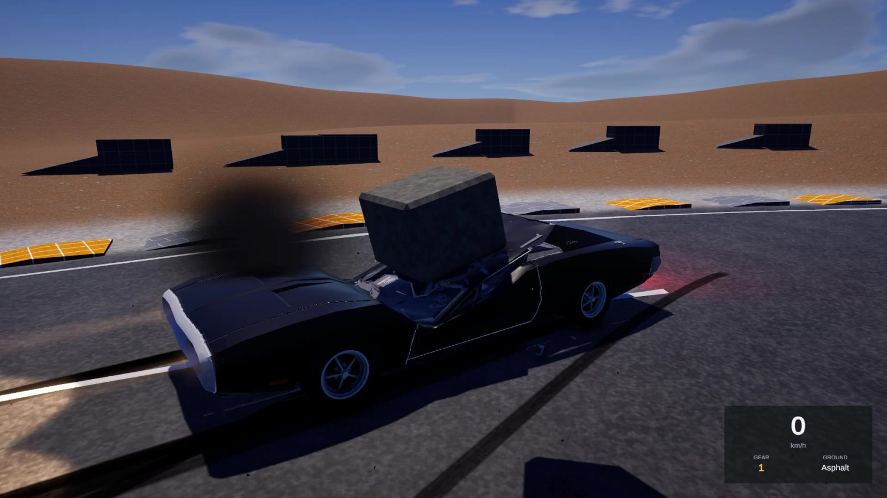<figcaption data-i18n="g9">Weight drop test &mdash; Burst mesh deformation and per-zone damage</figcaption></figure>
      <figure class="shot" data-src="img/muscle-dust.jpg">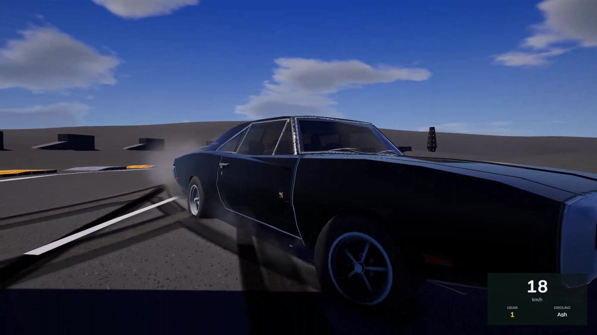<figcaption data-i18n="g10">Off-camber landing on loose ground</figcaption></figure>
      <figure class="shot" data-src="img/hero.jpg"><figcaption data-i18n="g11">Monster truck archetype: long travel, soft springs, heavy unsprung mass</figcaption></figure>
    </div>
    <p class="note" data-i18n="gal.note">Note: these frames come from the current development build. The example vehicle models shown are placeholders and are being replaced before release.</p>
  </div>
</section>

<section id="next">
  <div class="wrap">
    <div class="sec-head">
      <div class="eyebrow"><span data-i18n="next.eyebrow">What's next</span></div>
      <h2 data-i18n="next.h2">Simulation assets you can drop in, then open up</h2>
      <p data-i18n="next.p">The plan is a family of Unity packages that all behave the same way: they work on the first play, every subsystem is usable on its own, everything is documented, and nothing is a black box. Ready to use in games, simulations and training projects &mdash; and modular enough to build on.</p>
    </div>
    <div class="road">
      <div class="road-item"><span class="badge now" data-i18n="b.now">In release prep</span><div>
        <h3 data-i18n="r1.t">Car Physics v1.0</h3>
        <p data-i18n="r1.b">The full vehicle package above: seven tuned vehicle archetypes, the damage and audio stacks, ground and water interaction, editor tooling and documentation. Verified on Unity 2022.3 LTS through Unity 6.</p></div></div>
      <div class="road-item"><span class="badge soon" data-i18n="b.test">In testing</span><div>
        <h3 data-i18n="r2.t">Ocean Simulation</h3>
        <p data-i18n="r2.b">Buoyancy and waves with the CPU and the GPU solving the same surface, shore waves driven by a distance-to-beach field, wind, ripples and diving. Built for bodies that float in it, not just a water shader.</p></div></div>
      <div class="road-item"><span class="badge" data-i18n="b.plan">Planned</span><div>
        <h3 data-i18n="r3.t">More simulation packages</h3>
        <p data-i18n="r3.b">The physical systems that get rewritten from scratch on every project. Same contract each time: modular, documented, extendable, and no runtime licence checks.</p></div></div>
      <div class="road-item"><span class="badge" data-i18n="b.plan2">Ongoing</span><div>
        <h3 data-i18n="r4.t">Games</h3>
        <p data-i18n="r4.b">The simulation work feeds games built to entertain &mdash; which is the reason any of this got started.</p></div></div>
    </div>
  </div>
</section>

<section id="about" class="alt">
  <div class="wrap">
    <div class="sec-head">
      <div class="eyebrow"><span data-i18n="about.eyebrow">About</span></div>
      <h2 data-i18n="about.h2">Hi, I'm Berke Erdem</h2>
    </div>
    <div class="about">
      <div>
        <p class="first" data-i18n="about.p1">A computer engineer who has spent years building games and simulations.</p>
        <p data-i18n="about.p2">What I like most is the part people usually skip: the physical system underneath. Why a tyre lets go exactly when it does, what a chassis does when it lands wrong, how a hull sits in a wave. Getting that right is the difference between something that looks like it moves and something that feels like it moves.</p>
        <p data-i18n="about.p3">So I build simulation assets other developers can genuinely use &mdash; the kind that carry their weight in a real project, not only in a demo scene &mdash; and games whose job is to entertain people, starting with me.</p>
        <p data-i18n="about.p4">Everything here is written and maintained by one person, which is also why the packages are documented the way they are: I have to be able to come back to them too.</p>
      </div>
      <div class="skills">
        <span class="skill">Unity</span><span class="skill">URP</span><span class="skill">C#</span>
        <span class="skill">Burst / Jobs</span><span class="skill">HLSL</span>
        <span class="skill">Vehicle dynamics</span><span class="skill">Fluid &amp; wave sim</span>
        <span class="skill">Editor tooling</span><span class="skill">Procedural generation</span>
        <span class="skill">Profiling</span><span class="skill">Game design</span>
      </div>
    </div>
  </div>
</section>

<section id="contact">
  <div class="wrap">
    <div class="sec-head">
      <div class="eyebrow"><span data-i18n="c.eyebrow">Contact</span></div>
      <h2 data-i18n="c.h2">Get in touch</h2>
      <p data-i18n="c.p">Support questions, licensing, collaboration, or a feature you need in one of the packages &mdash; email is the fastest way to reach me.</p>
    </div>
    <div class="contact-grid">
      <div class="panel">
        <h3 data-i18n="c.email">Email</h3>
        <p data-i18n="c.emailp">For support, pre-sales questions and anything commercial.</p>
        <div class="mailbox">
          <code id="mail">berkeerdem0@gmail.com</code>
          <button class="chip" id="copymail" type="button" data-i18n="c.copy">Copy</button>
        </div>
        <p class="mini" data-i18n="c.resp">I read everything and usually answer within a couple of days. For a bug, the form beside this one gives me what I need to reproduce it on the first try.</p>
      </div>
      <div class="panel" id="report">
        <h3 data-i18n="r.h">Report a bug</h3>
        <p data-i18n="r.p">No account, no tracker. Fill this in, copy the report and email it &mdash; it reaches me in a form I can act on straight away.</p>
        <div style="margin-top:16px">
          <div class="two">
            <div class="field"><label for="f-asset" data-i18n="r.asset">Package</label>
              <select id="f-asset"><option>Car Physics</option><option>Ocean Simulation</option><option data-i18n="r.other">Other / not sure</option></select></div>
            <div class="field"><label for="f-sev" data-i18n="r.sev">Severity</label>
              <select id="f-sev"><option data-i18n="r.sev1">Blocker &mdash; unusable</option><option data-i18n="r.sev2">Major &mdash; broken feature</option><option data-i18n="r.sev3">Minor &mdash; cosmetic</option></select></div>
          </div>
          <div class="two">
            <div class="field"><label for="f-unity" data-i18n="r.unity">Unity version</label>
              <input id="f-unity" placeholder="2022.3.62f2"></div>
            <div class="field"><label for="f-env" data-i18n="r.env">Platform / pipeline</label>
              <input id="f-env" placeholder="Windows, URP 14"></div>
          </div>
          <div class="field"><label for="f-sum" data-i18n="r.sum">Summary</label>
            <input id="f-sum" data-i18n-ph="r.sumph" placeholder="One line: what goes wrong"></div>
          <div class="field"><label for="f-steps" data-i18n="r.steps">Steps to reproduce</label>
            <textarea id="f-steps" data-i18n-ph="r.stepsph" placeholder="1. Open the demo scene&#10;2. ...&#10;3. ..."></textarea></div>
          <div class="field"><label for="f-exp" data-i18n="r.exp">Expected vs. actual</label>
            <textarea id="f-exp" data-i18n-ph="r.expph" placeholder="Expected: ...&#10;Actual: ... (console errors, if any)"></textarea></div>
          <div class="cta-row">
            <button class="btn btn-p" id="gen" type="button" data-i18n="r.gen">Generate report</button>
            <button class="btn btn-s" id="copyrep" type="button" hidden data-i18n="r.copy">Copy report</button>
          </div>
          <div class="out" id="out" hidden><pre id="pre"></pre>
            <p class="mini" data-i18n="r.sendto">Send it to berkeerdem0@gmail.com &mdash; the subject line is ready in the first row.</p></div>
        </div>
      </div>
    </div>
  </div>
</section>

<div class="wrap"><footer>
  <span>&copy; 2026 Berke Erdem</span>
  <span class="mono" data-i18n="foot">Unity simulation assets &middot; Independent developer</span>
</footer></div>
</main>

<dialog class="light" id="lb">
  
  <div class="cap"><span id="lbcap"></span><button type="button" id="lbx">&#10005; Close</button></div>
</dialog>

<script>
var TR = {
 "nav.work":"Neler yapılıyor","nav.gallery":"Görseller","nav.next":"Sırada ne var","nav.about":"Hakkında","nav.contact":"İletişim","nav.report":"Hata bildir",
 "hero.eyebrow":"Unity · Simülasyon asset'leri",
 "hero.h1a":"Simülasyon sistemleri,","hero.h1b":"sürülmek için yazıldı.",
 "hero.lead":"Yıllardır oyun ve simülasyon geliştiren bir bilgisayar mühendisiyim. Projene koyduğun anda çalışan, sonra da üstüne rahatça geliştirebileceğin modüler Unity simülasyon paketleri yazıyorum — ve asıl işi insanları, en başta da beni eğlendirmek olan oyunlar.",
 "hero.cta1":"Neler yapıldığına bak","hero.cta2":"İletişime geç",
 "stat.s1":"runtime sistem","stat.s2":"araç arketipi","stat.s3":"doğrulama testi","stat.s4":"Unity LTS doğrulandı",
 "work.eyebrow":"Şu an üzerinde çalıştığım",
 "work.h2":"Car Physics — sarmalayıcı değil, gerçek bir araç simülasyonu",
 "work.p":"Unity URP için sıfırdan yazılmış bir araç simülasyon paketi. Temas modeli, süspansiyon çözücü ve aktarma organları WheelCollider'ın üstüne giydirilmedi, baştan yazıldı; etraflarındaki her şey de — deformasyon, mekanik hasar, sentezlenmiş ses, zemin etkileşimi, aydınlatma, girdi — tek parça olarak da hep birlikte de kullanılabilsin diye kurgulandı.",
 "f1.t":"Lastik teması","f1.b":"Tekerlek başına tek ışın yerine küre-halka zemin sorgusu; lastik üstünde durduğu şeyin profilini okuyor — kaldırım, iz, taş, çamurluk kenarı.",
 "f2.t":"Süspansiyon","f2.b":"Yayla seri bağlanabilen hidrolik silindirli coil-over çözücü. Lowrider'ın gerçekten zıplamasını ve üç tekerlek üstünde durmasını sağlayan bu — animasyon değil.",
 "f3.t":"Aktarma organları","f3.b":"Manuel veya otomatik şanzıman, debriyaj, wastegate'li turbo ve zamanlayıcıyla değil gerçek turbo basıncıyla tetiklenen egzoz alevleri.",
 "f4.t":"Gövde deformasyonu","f4.b":"Burst ile derlenmiş mesh deformasyonu: read/write mesh'ler, boya atlası, kopabilen parçalar ve ayrı cam. Paneller göçüyor, parçalar kopuyor, kopan parçalar çarpışmaya devam ediyor.",
 "f5.t":"Mekanik hasar","f5.b":"Kaza sadece göçük bırakmıyor, arıza üretiyor: bölge bazlı pert, lastik inmesi ve patlaması, radyatör ve motor arızaları, araç bittiğinde kumanda kilidi.",
 "f6.t":"Sentezlenmiş ses","f6.b":"Motor, turbo, lastik ve çarpma sesleri örnek değil, çalışma anında sentez. Zemine göre lastik döngüleri ve hasar durumunu takip eden arıza sesleri — pakete ayrıca bir ses kütüphanesi koymaya gerek yok.",
 "f7.t":"Zemin sistemleri","f7.b":"Kendi tutuşu ve sesi olan terrain yüzeyleri, gövdeyi yönlü biçimde kaplayan voxel çamur hacmi ve su birikintilerinin mesh'in üstünde durduğu, aquaplaning'in gerçek derinliği okuduğu ıslak zemin derinlik alanı.",
 "f8.t":"Su","f8.b":"Kalibre edilmiş debisi ve iki pişmiş durumu (normal akış ve taşkın) olan nehir simülasyonu; ekran uzayı yansımaları, dalgacıklar ve zamanla kuruyan ıslak boya.",
 "f9.t":"Aydınlatma","f9.b":"Gökyüzünü, güneşi ve ortam ışığını süren gündüz/gece döngüsü; ona göre davranan farlar, far hüzmeleri ve stop lambaları.",
 "f10.t":"Girdi","f10.b":"Klavye, gamepad ve tam direksiyon desteği: pedal setleri, H vites kolu, el freni kolu, soft lock ve eksen başına kalibrasyon — katmanlı kurulduğu için direksiyonu çıkardığında doğrudan kola düşüyor.",
 "f11.t":"Modüler rig","f11.b":"Prefab'larda sadece çekirdek duruyor. Çalışma anında araç rig'i diğer yirmi küsur sistemi ortak bir profilden kuruyor; ihtiyacın olan parçayı alıp gerisini bırakabiliyorsun.",
 "f12.t":"Editör araçları","f12.b":"Pistler, seviyeler ve aydınlatma editör araçlarından üretiliyor; yanında render optimize edici, 152 testlik doğrulama paketi ve fragman için sinematik kayıt düzeneği.",
 "gal.eyebrow":"Hareket halinde","gal.h2":"Çalışan simülasyondan kareler",
 "gal.p":"Hepsi play mode'da alındı, hiçbiri kurgu değil. Büyütmek için bir kareye tıkla.",
 "g1":"Monster truck su birikintisini geçerken — rijit aks salınımı ve tekerlek başına temas",
 "g2":"Yük altında direksiyon geometrisi ve süspansiyon stroku",
 "g3":"Hidrolik: yayla seri bağlı silindir, aracı üç tekerlek üstünde tutuyor",
 "g4":"Turbo basıncının tetiklediği egzoz alevleri, gündüz/gece döngüsü altında",
 "g5":"Tozlu zeminde arkayı kaybetmek — tutuş, toz ve alev, hepsi yüzeye bağlı",
 "g6":"Viraj girişinde ağırlık transferi, alçak takip kamerası",
 "g7":"Gece farlar ve hüzmeler","g8":"Su basmış zemin: ıslak boya, dalgacıklar ve yansımalar",
 "g9":"Ağırlık düşürme testi — Burst mesh deformasyonu ve bölge bazlı hasar",
 "g10":"Gevşek zeminde yan yatık iniş",
 "g11":"Monster truck arketipi: uzun strok, yumuşak yay, ağır yaysız kütle",
 "gal.note":"Not: bu kareler güncel geliştirme sürümünden. Görünen örnek araç modelleri geçicidir ve yayından önce değiştiriliyor.",
 "next.eyebrow":"Sırada ne var","next.h2":"Hazır kullanılan, sonra da açılabilen simülasyon asset'leri",
 "next.p":"Plan, hepsi aynı şekilde davranan bir Unity paket ailesi: ilk çalıştırmada iş görsün, her alt sistem tek başına kullanılabilsin, her şey belgelenmiş olsun ve hiçbir yeri kara kutu olmasın. Oyunlarda, simülasyonlarda ve eğitim projelerinde hazır kullanılacak — üstüne geliştirmeye de yetecek kadar modüler.",
 "b.now":"Yayın hazırlığında","b.test":"Test aşamasında","b.plan":"Planlanıyor","b.plan2":"Sürüyor",
 "r1.t":"Car Physics v1.0","r1.b":"Yukarıdaki paketin tamamı: ayarları yapılmış yedi araç arketipi, hasar ve ses katmanları, zemin ve su etkileşimi, editör araçları ve dokümantasyon. Unity 2022.3 LTS'ten Unity 6'ya kadar doğrulandı.",
 "r2.t":"Ocean Simulation","r2.b":"CPU ve GPU'nun aynı yüzeyi çözdüğü kaldırma kuvveti ve dalgalar, kıyıya uzaklık alanının sürdüğü kıyı dalgaları, rüzgâr, dalgacıklar ve dalış. Sadece bir su shader'ı değil, içinde yüzen cisimler için kuruldu.",
 "r3.t":"Daha fazla simülasyon paketi","r3.b":"Her projede sıfırdan yeniden yazılan fiziksel sistemler. Her seferinde aynı sözleşme: modüler, belgelenmiş, geliştirilebilir ve çalışma anında lisans kontrolü yok.",
 "r4.t":"Oyunlar","r4.b":"Simülasyon tarafı, eğlendirmek için yapılan oyunları besliyor — zaten bütün bunların başlama sebebi o.",
 "about.eyebrow":"Hakkında","about.h2":"Merhaba, ben Berke Erdem",
 "about.p1":"Yıllardır oyun ve simülasyon geliştiren bir bilgisayar mühendisiyim.",
 "about.p2":"En sevdiğim kısım, genelde atlanan kısım: alttaki fiziksel sistem. Lastik tam olarak neden o anda kayıyor, şasi kötü indiğinde ne yapıyor, bir tekne dalganın içinde nasıl oturuyor. Bunu doğru kurmak, hareket ediyormuş gibi görünen şeyle hareket ettiğini hissettiren şey arasındaki fark.",
 "about.p3":"Bu yüzden başka geliştiricilerin gerçekten kullanabileceği simülasyon asset'leri yazıyorum — sadece demo sahnesinde değil, gerçek bir projede de yükü kaldıran türden — ve işi insanları, en başta da beni eğlendirmek olan oyunlar.",
 "about.p4":"Buradaki her şeyi tek kişi yazıyor ve bakımını yapıyor; paketlerin bu kadar ayrıntılı belgelenmesinin sebebi de bu: benim de onlara geri dönebilmem gerekiyor.",
 "c.eyebrow":"İletişim","c.h2":"Bana ulaş",
 "c.p":"Destek sorusu, lisanslama, iş birliği ya da paketlerden birinde ihtiyacın olan bir özellik — bana en hızlı e-postayla ulaşırsın.",
 "c.email":"E-posta","c.emailp":"Destek, satın alma öncesi sorular ve ticari konular için.","c.copy":"Kopyala",
 "c.resp":"Gelen her şeyi okuyorum, genelde birkaç gün içinde dönüyorum. Hata bildirimi için yandaki form, sorunu ilk denemede yeniden üretmem için gereken her şeyi veriyor.",
 "r.h":"Hata bildir","r.p":"Hesap yok, takip yok. Formu doldur, raporu kopyala ve e-postayla gönder — bana doğrudan iş görecek biçimde ulaşıyor.",
 "r.asset":"Paket","r.other":"Diğer / emin değilim","r.sev":"Önem",
 "r.sev1":"Engelleyici — kullanılamıyor","r.sev2":"Büyük — özellik bozuk","r.sev3":"Küçük — görsel",
 "r.unity":"Unity sürümü","r.env":"Platform / pipeline","r.sum":"Özet","r.sumph":"Tek cümle: ne ters gidiyor",
 "r.steps":"Yeniden üretme adımları","r.stepsph":"1. Demo sahnesini aç\n2. ...\n3. ...",
 "r.exp":"Beklenen ve gerçekleşen","r.expph":"Beklenen: ...\nGerçekleşen: ... (varsa konsol hataları)",
 "r.gen":"Raporu oluştur","r.copy":"Raporu kopyala",
 "r.sendto":"berkeerdem0@gmail.com adresine gönder — konu satırı ilk satırda hazır.",
 "foot":"Unity simülasyon asset'leri · Bağımsız geliştirici"
};

var EN = {};
document.querySelectorAll("[data-i18n]").forEach(function(el){ EN[el.dataset.i18n] = el.textContent; });
document.querySelectorAll("[data-i18n-ph]").forEach(function(el){ EN[el.dataset.i18nPh] = el.placeholder; });

var cur = "en";
function apply(lang){
  var d = (lang === "tr") ? TR : EN;
  document.querySelectorAll("[data-i18n]").forEach(function(el){
    var v = d[el.dataset.i18n]; if (v != null) el.textContent = v;
  });
  document.querySelectorAll("[data-i18n-ph]").forEach(function(el){
    var v = d[el.dataset.i18nPh]; if (v != null) el.placeholder = v;
  });
  document.getElementById("lang").textContent = (lang === "tr") ? "EN" : "TR";
  document.documentElement.lang = lang;
  cur = lang;
  try { localStorage.setItem("lang", lang); } catch (e) {}
}
try { if (localStorage.getItem("lang") === "tr") apply("tr"); } catch (e) {}
document.getElementById("lang").onclick = function(){ apply(cur === "tr" ? "en" : "tr"); };

var tb = document.getElementById("theme");
try { var st = localStorage.getItem("theme"); if (st) document.documentElement.dataset.theme = st; } catch (e) {}
tb.onclick = function(){
  var isLight = document.documentElement.dataset.theme === "light" ||
    (!document.documentElement.dataset.theme && matchMedia("(prefers-color-scheme: light)").matches);
  var next = isLight ? "dark" : "light";
  document.documentElement.dataset.theme = next;
  try { localStorage.setItem("theme", next); } catch (e) {}
};

var lb = document.getElementById("lb"), lbimg = document.getElementById("lbimg"), lbcap = document.getElementById("lbcap");
document.getElementById("gal").addEventListener("click", function(e){
  var fig = e.target.closest(".shot"); if (!fig) return;
  lbimg.src = fig.dataset.src;
  lbcap.textContent = fig.querySelector("figcaption").textContent;
  lb.showModal();
});
document.getElementById("lbx").onclick = function(){ lb.close(); };
lb.addEventListener("click", function(e){ if (e.target === lb) lb.close(); });

function flash(btn, label){
  var old = btn.textContent;
  btn.textContent = label;
  setTimeout(function(){ btn.textContent = old; }, 1700);
}
function selectNode(node, btn){
  try {
    var r = document.createRange(); r.selectNodeContents(node);
    var s = getSelection(); s.removeAllRanges(); s.addRange(r);
    flash(btn, cur === "tr" ? "Seçildi" : "Selected");
  } catch (e) {}
}
function copyText(text, node, btn){
  var done = cur === "tr" ? "Kopyalandı" : "Copied";
  try {
    navigator.clipboard.writeText(text).then(
      function(){ flash(btn, done); },
      function(){ selectNode(node, btn); }
    );
  } catch (e) { selectNode(node, btn); }
}

var mailNode = document.getElementById("mail");
document.getElementById("copymail").onclick = function(){
  copyText("berkeerdem0@gmail.com", mailNode, this);
};

var reportText = "";
function val(id){ return document.getElementById(id).value.trim(); }
document.getElementById("gen").onclick = function(){
  var tr = cur === "tr";
  var L = tr
    ? { sub:"Konu", asset:"Paket", sev:"Önem", unity:"Unity", env:"Ortam", steps:"Adımlar", exp:"Beklenen / gerçekleşen", none:"(boş)" }
    : { sub:"Subject", asset:"Package", sev:"Severity", unity:"Unity", env:"Environment", steps:"Steps", exp:"Expected / actual", none:"(empty)" };
  var sum = val("f-sum") || (tr ? "(özet yok)" : "(no summary)");
  var a = document.getElementById("f-asset").value;
  var s = document.getElementById("f-sev").value;
  reportText =
    L.sub + ": [" + a + "] " + sum + "\n\n" +
    L.asset + ": " + a + "\n" +
    L.sev + ": " + s + "\n" +
    L.unity + ": " + (val("f-unity") || L.none) + "\n" +
    L.env + ": " + (val("f-env") || L.none) + "\n\n" +
    L.steps + ":\n" + (val("f-steps") || L.none) + "\n\n" +
    L.exp + ":\n" + (val("f-exp") || L.none);
  document.getElementById("pre").textContent = reportText;
  document.getElementById("out").hidden = false;
  document.getElementById("copyrep").hidden = false;
};
document.getElementById("copyrep").onclick = function(){
  copyText(reportText, document.getElementById("pre"), this);
};
</script>
